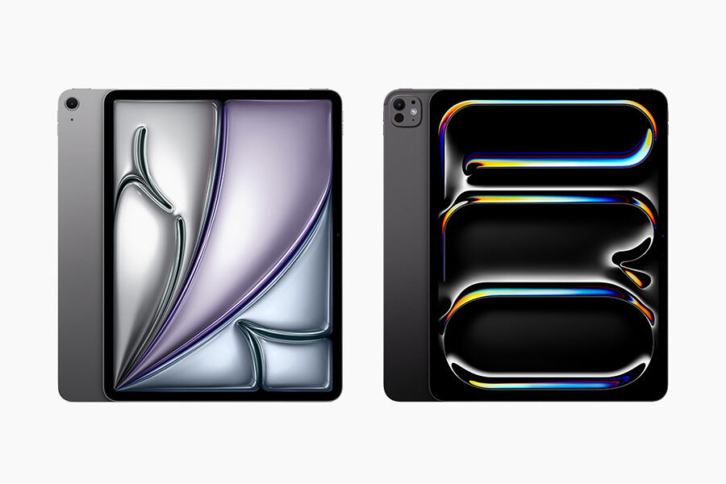

Noticias
Últimas Noticias:

Nuevo iPad Pro y iPad Air
El iPad Air de este año no es bueno. Sin embargo, El iPad Pro de este año es una buena opción (si realmente lo necesita o si tiene mucho dinero). Si no tiene mucho dinero, el iPad 10 es una mejor opción. Si puede esperar, espere el iPad 11. Cuando salga el iPad 11, es muy probable que el precio del iPad 10 baje.
Kirin 9000S: Un gran avance
El Kirin 9000S solo utiliza tecnología china.Sin embargo, su rendimiento es bajo, al menos en comparación con el Qualcomm Snapdragon® 8 de tercera generación. Al menos tiene 5G... al menos es un avance de la tecnología china. Espero que China pueda fabricar más chips y que se desarrolle rápidamente.